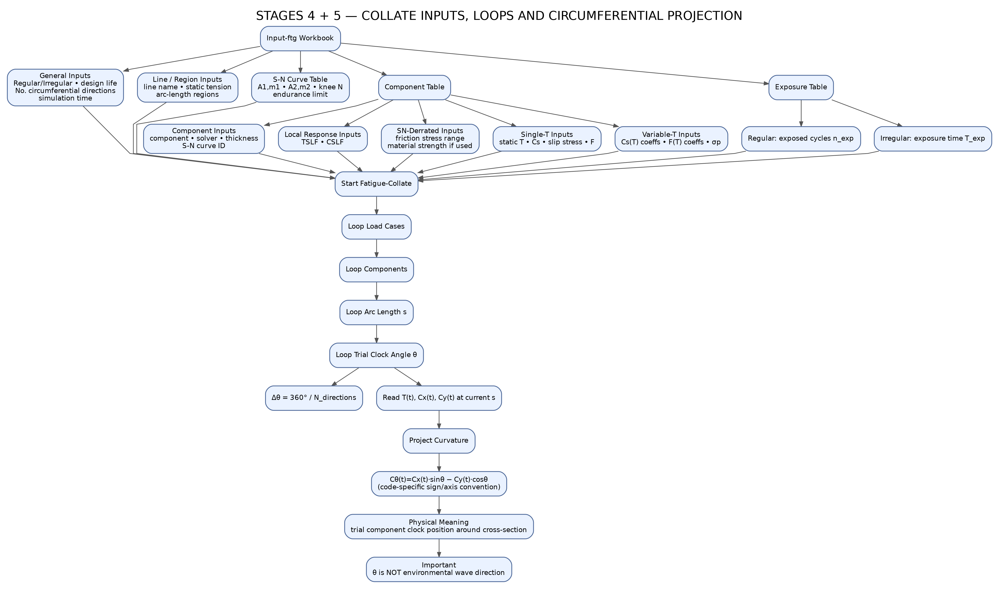

The workbook defines the case, line/region, component, S-N, local response and exposure inputs. Fatigue-Collate then loops through load cases, components, arc length and trial clock angle before projecting the global curvature histories to each circumferential fatigue position.
Click each box for the exact role, inputs, outputs and checks.
Master configuration source for Fatigue-Collate.
Regular/Irregular • design life • number of circumferential directions • simulation time
Line name • static tension • arc-length regions
A1, m1 • A2, m2 • knee N • endurance limit
Component and solver-specific local inputs.
Regular n_exp or irregular T_exp.
component • solver • thickness • S-N curve ID
TSLF • CSLF
friction stress range • material strength if used
static T • Cs • slip stress • F
Cs(T) coeffs • F(T) coeffs • σp
All required inputs converge here.
Process one environmental case at a time.
Evaluate each fatigue component / solver branch.
Evaluate every selected station.
Evaluate trial component position around the cross-section.
Δθ = 360° / N_directions
Read synchronized histories at the current arc length s.
Convert global curvature components to the trial clock position.
Code-specific sign / axis convention from the source map.
θ identifies a trial component clock position around the cross-section.
Keep these controls visible when reviewing the workflow.
This interactive page follows Stages 4 + 5 from the supplied master map.
